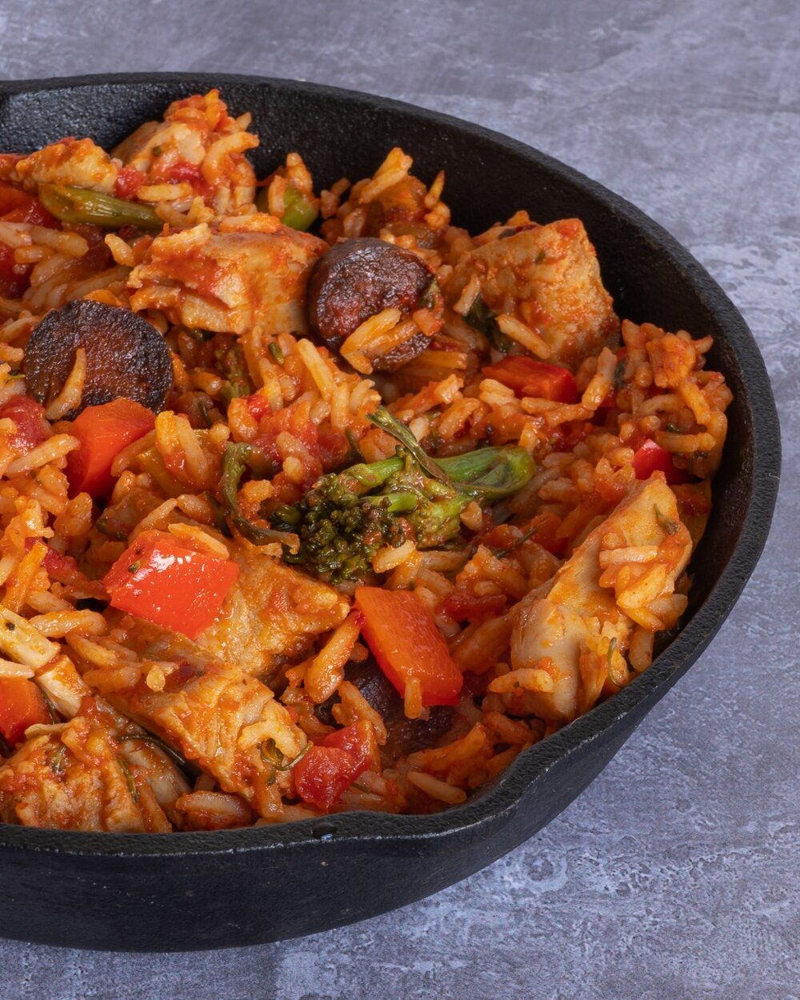

Vegan Jambalaya

Jambalaya is a rice dish from Cajun and Creole cuisine. You will find countless different recipes across the web, all claiming to be authentic.
Without doubting the authenticity of any, I want to show you my vegan twist on this staple recipe of southern kitchen.
Ingredients:
500g Jasmine rice
50g Vegan butter
1 Large onion
1 Red bellpepper
1 Green bellpepper
1 Pack of celery
1 Jalapeno
4 Large garlic cloves
200g Chicken substitute of choice
200g Sausage subtitute of choice
1/2 tbsp Cayenne pepper
1/2 tbsp White pepper
1/2 tbsp Black pepper
1 tbsp Smoked paprika
1 tbsp Dried thyme
1 tbsp Cajun Seasoning
2 Bay leaves
4 tbsp Vegetable stock
500ml Water
500g Crushed tomatoes
Directions:
- While heating the butter in a large cast iron pan, chop up the onions, bellpeppers, celery and jalapeno. Once the butter is melted, add the chicken and sausage substitute to the pan and fry until crispy. Remove from the pan and set aside.
- Add the veggies into the same pan and roughly chop the garlic. Once veggies are soft, add the garlic.
- After 1-2 minutes, add the dry spices, followed by the rice. Stir together for another 2-3 minutes.
- Add the water, together with the vegetable stock and crushed tomatoes and cover with a lid. turn down to low heat and let simmer for 35 minutes.
- Once the rice has absorbed all the water, add the chicken and sausage substitues back top the pan and you are ready to serve!